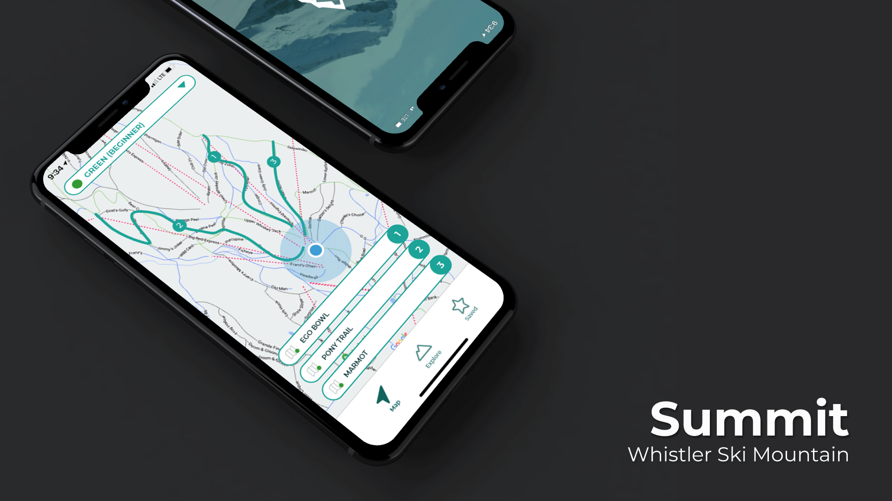
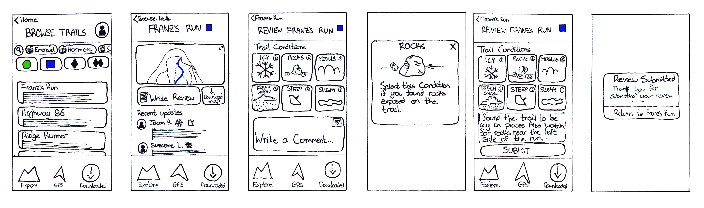
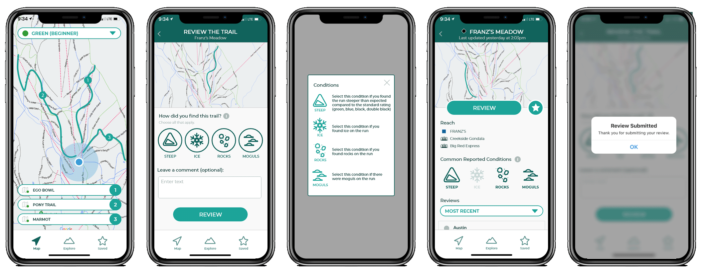
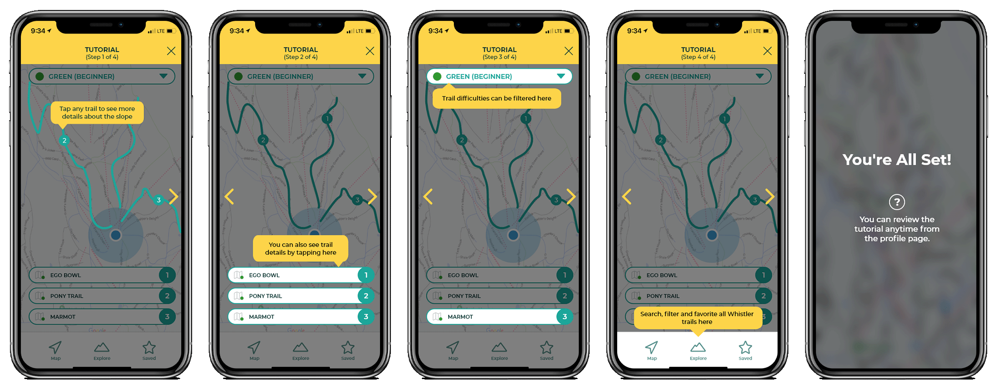

Summit is a smartphone application that gives skiers and snowboarders at the Whistler Blackcomb ski resort an opportunity to share trail information and specific weather updates to inform others of current conditions and hazards, as well as recommended trails.
Final application design
My Roles
Primary Research
Secondary Research
UX Design
UI Design
Video Editing
Animation
Micro-interactions
Team (Remote)
Kelvin
Virginia
Time Frame
Fall 2020, for 8 weeks
(October - December)
In a senior user interface design course, two team members and I prototyped a new smartphone application with the intent of strengthening the skier and snowboarder community at the Whistler Blackcomb ski resort. Users are able to share live updates of trail information and conditions
We investigated popular ski trail applications to observe existing interfaces and browse what was available on the market. Furthermore, we ensured our application differed functionality and aesthetically from existing applications. Summit differs from the competition because it handles user-generated reviews and community engagement unlike other applications.
Summit's target is to be accessible and beneficial to all levels of skiers and snowboarders; therefore, we tailored our research to investigate the goals and preferences of various skiers and snowboarders. We found that many beginner skiers struggle to navigate the unfamiliar environment, and many advanced and expert skiers are seeking the best snow conditions or the most challenging terrain on the mountain.
My responsibility was to design the interface for browsing trail conditions and writing a review on a particular trail. I emphasized using large icons and buttons for common ski trail conditions to account for cold fingers and touchscreen gloves that make tapping screens difficult in the cold.
Some of my roles were designing the iconography, copywriting, user flow, and assisting the user interface design of the application. A major iteration was adjusting the interface to be more descriptive to the user; for example, describing trail difficulty in descriptive terminology rather than icons seen on the mountain, which beginners may not understand.
We conducted user tests online through Zoom as well as in-person while maintaining Covid-19 safety. During the testing, I was in charge of giving the participants tasks to complete in the application. Moreover, I solved any technical issues that arose and recorded the emotions expressed by the participant while they navigated the interface.
After each participant had time to familiarize themselves with Summit, we held a brief interview where we asked open-ended questions about the application. Some of the participants stated they already search for trail reviews online, so a centralized application would make the process much easier. One interviewee mentioned they use a similar app for hiking and off-roading, so using one for skiing would make sense and be intuitive.
After our initial round of user testing, we evaluated the opinions expressed by participants in interviews and surveys as well as our own observations. One insight we became aware of is the functionality of the application wasn't immediately clear to users. We added a quick tutorial for new users to help guide them through the features of the application.
Through the process of prototyping an application from start to finish I learned the importance of empathizing with a particular user base through various design methods. For instance, gathering sufficient preliminary research along with performing user testing early in the design process is crucial to designing a successful product for the user.
Furthermore, while we were commended by our teaching staff for elements in our application such as UI aesthetic and consistency, the design of an application is never complete. There are always updates and changes to be released, such as adding more trail categories and suggestions for users, or allowing users to add images or videos of their run.
Embracing teamwork early on and distributing the workload amongst team members ultimately had a major role in the development of the application. While we each specialized in individual tasks, we continued to cooperate as a team by asking for support and opinions to benefit the design of the application. This meant we had to become altruistic designers who situate the project and what would be best for users ahead of our own design preferences.